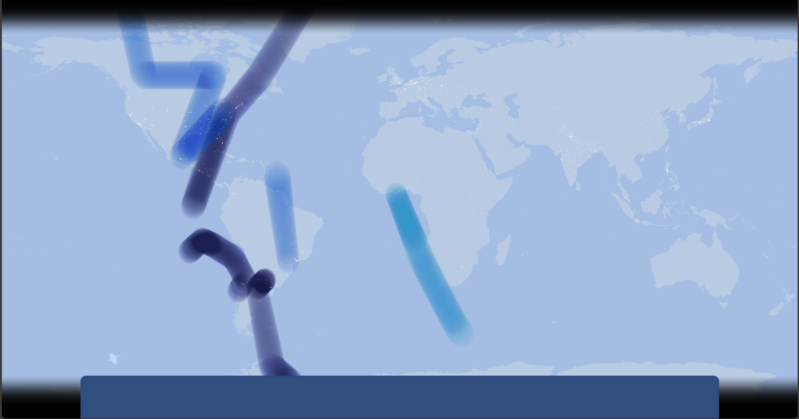
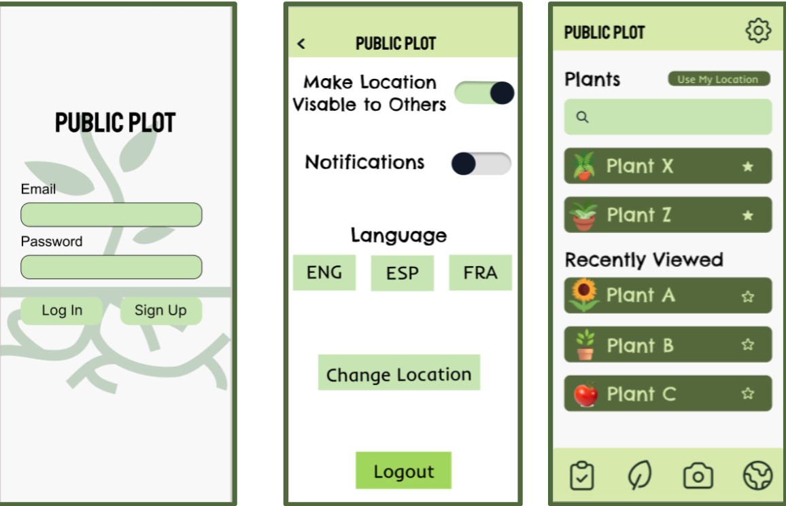
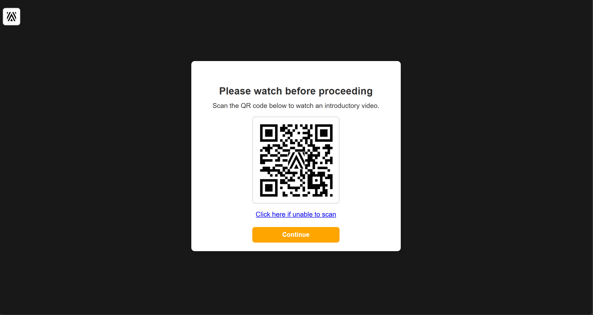
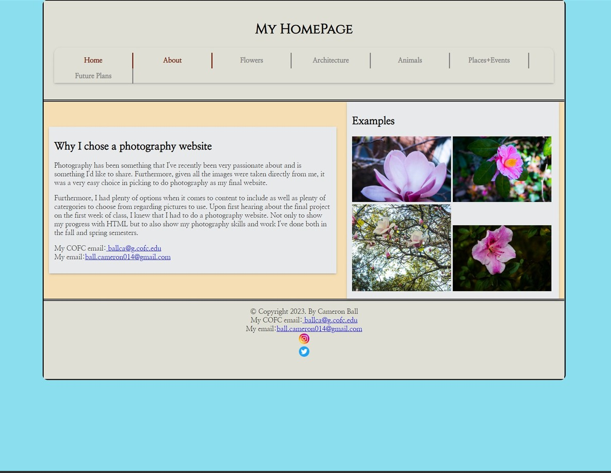
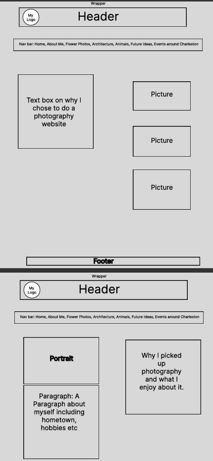
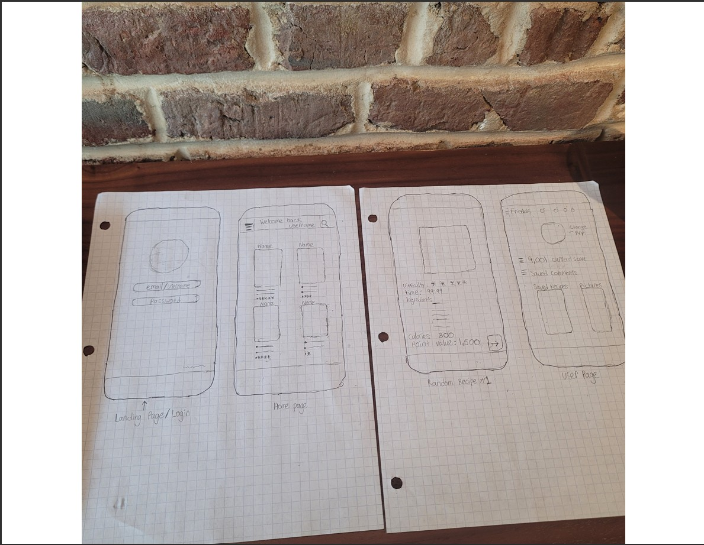
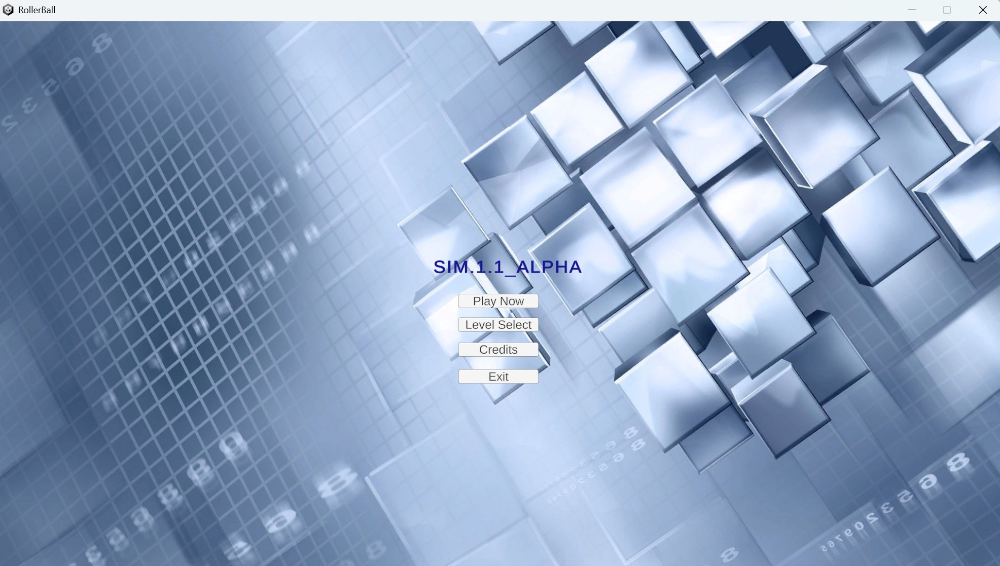

01Capstone · Interactive experience
The Wind Within
An artistic audio-visual experience powered by wind data, smartphones, and audience movement, created with the University of Utah’s art department.
UX/UI designer · technologist · researcher
I bring design, development, and hands-on technology support together to make digital experiences more useful, inclusive, and human.
Selected work
From early sketches to interactive experiences, each project starts with understanding the users it's made for.

01Capstone · Interactive experience
An artistic audio-visual experience powered by wind data, smartphones, and audience movement, created with the University of Utah’s art department.

02UI/UX · Group project
A high-fidelity Figma prototype created for a UI/UX course, applying user-centered design principles to a mobile product. Public plot is a gardening app for users in urban environments, supporting sustainable practices and community engagement.

03Mobile app · Prototype
A prototype and proof-of-concept for the International African American Museum that guides visitors through genealogy questions to relevant video content.

04Web development · Photography
A multi-page photography website pairing a considered layout with a collection of work from 2022–2023.

05UX process · Wireframing
An early layout study for a photography website, mapping the structure and content before visual design and development.

06Mobile app · Early concepts
A hand-drawn interface concept mapping the planned pages and functionality for a React Native mobile application.

07Unity · Game development
A Unity game where players navigate increasingly complex mazes, collect points, and progress through levels.
Research in progress
My graduate work explores practical ways technology can support people in complex, everyday environments.
Researching a mobile hazard-reporting tool for field employees, alongside a dashboard that helps off-site teams track risks and recurring trends.
Exploring how remote neurodivergent workers—including people with ADHD, autism, and dyslexia—can build trust and connection with their teams.
A little about me
I grew up in Charleston, South Carolina, with a lasting curiosity about technology and how it can help people. I’m a designer, developer, and researcher who brings a calm, people-first approach to solving not just problems but practical problems.
I’m especially interested in human-computer interaction: how tools like AI assistants fit into everyday life, how those experiences affect different people, and how to make technology feel more understandable and accessible.
More about my backgroundLearning, always
Interactive Computing
Georgia Institute of Technology · Atlanta, GADigital Media Concentration · Cum Laude
College of Charleston · Charleston, SCExperience & capabilities
I’ve supported real people and real systems while building the skills to design what comes next.
Have a thoughtful challenge?
I’m always glad to connect about human-centered design, technology, and opportunities to help people.
Say hello